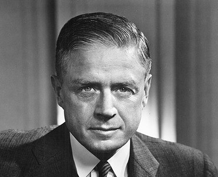

Thomas John Watson Sr. (February 17, 1874 - June 19, 1956) was an American businessman who served as the chairman and CEO of IBM.[1][2] He oversaw the company's growth into an international force from 1914 to 1956. Watson developed IBM's management style and corporate culture from John Henry Patterson's training at NCR.[3] He turned the company into a highly effective selling organization, based largely on punched card tabulating machines. A leading self-made industrialist,[4] he was one of the richest men of his time and was called the world's greatest salesman when he died in 1956.
| Year | Education |
|---|---|
| 2003 to 2010 | Primary school |
| 2011 to 2015 | Secondary school |
| 2016 to 2017 | Higher Secondary school |
| 2019 to 2022 | Bachelors |